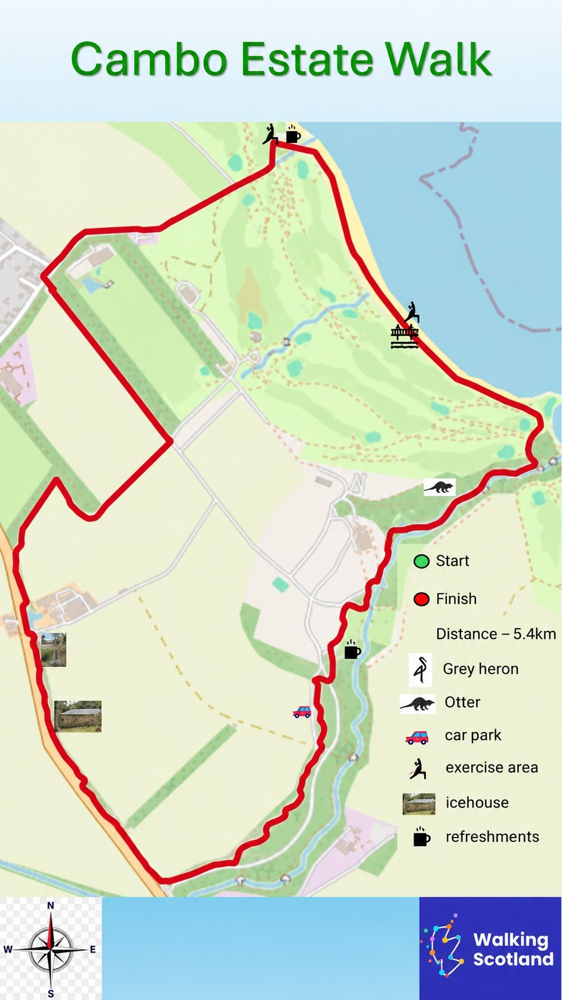

Find your way
Route map and description

Enlarge map
Start FinishGrey
heronOtterCar parkExercise
areaIcehouseRefreshments
About this walk
This longer circular route leaves the Stables Visitor Centre and follows woodland paths along the estate perimeter. It passes the Icehouse and swing, then continues towards the golf course and practice area before heading to the beach-side car park and refreshments. The route follows paths near the beach and golf course, returns through woodland alongside Cambo Burn, passes Cambo House and the Walled Garden, and finishes back at the Stables.
The walk combines woodland, field edges, coastal paths and estate features. Narrow or soft paths, boardwalks and sections beside the burn require care, particularly after wet weather; be aware of golfers where the route meets the course.
Read the full route descriptionThe walk
Description of the walk
This walk takes you from the Stables Visitor Centre heading south past the car park and along a flat woodland path towards the entrance to the estate where it takes a right turn and heads through woodland on the inside of the estate perimeter wall. There are a number of small boardwalks on this section where care should be taken, particularly if wet.
Walking through this part of the woodland there are fields to the right where roe deer can be seen crossing and grey herons are regular visitors, the nests of which are in the treetops above you.
Further along this path is an old Icehouse, previously used to store fresh meat, fish, fruit and ice throughout the year before mechanical refrigeration was invented. Beyond the icehouse the path undulates and narrows, due to the vegetation, where single file walking is required. Further along, on the left-hand side, is a rope swing that was used by the legendary Annmarie Taggart on her Cambo Health Walks.
At the end of this path, exit through a wooden gate, go across the road, and enter another woodland again through a wooden gate. Follow the single-file path along the left side of a mill pond and continue until a tarmac road is reached. This is the vehicle entrance road to Kingsbarns Golf Course. Take a right and walk along the right-hand side grass verge until the golf practice area is in view. Immediately before the practice area, take the path on the left, along the edge of the field with the woodland on your right. Keep going until you reach a tarmac road (Back Stile), where you turn right and it leads down to a car park.
Situated at one end of this car park is Harbour Burger (fast food and refreshments) and an area that can be used for Strength & Balance exercises.
Head to the far end of the car park, go through a kissing gate and follow the track between the beach and golf course; when the track curves away to the right, fork left on a grassy path (waymarker). Be aware of any golf being played and move along quietly.
Before reaching a band of trees the route emerges onto a wider track; bear right along this, passing to the right of the wooden toilets. Beyond these the track enters the woods. Go through the Cambo gate ahead signed for Fife Coastal Path. Note the bridge over the Cambo Burn but do not cross this; instead turn right up the path on the near bank.
Follow this path, keeping the burn to your left. Look out for the otter holt on the opposite bank of the burn.
Further along, with Cambo House on your right, the path reaches a wooden gate.
Through the gate, turn right and the walk ends after skirting round the north of the Walled Garden, through the Prairie Garden and back to the Stables Visitor Centre.
Look out for
Points of Interest
Select a photograph to open the image gallery for that feature.
Take care
Safety considerations
The walk is generally safe; however, care should be taken on the boardwalks and in wet weather.
The walk crosses a road at the entrance to the estate and walkers should take care when crossing.
The walk passes through a golf course. Walkers should be aware of golfers playing and move along quietly.
Underfoot
Pathway conditions
The gravel path at the start of the walk is clear and wide enough for a wheeled walking aid. Through the woodland, adjacent to the estate perimeter wall, the path has undulations and can be soft underfoot. From the woodland down to the Kingsbarns Beach Car Park, the path remains firm in most weathers.
Beyond the car park, the path is compacted sand and, therefore, prone to becoming soft in wet weather.
Again, on the woodland walk back to the Stables the path can be soft underfoot.
Plan ahead
Weather considerations
In autumn, some of the paths have a good covering of leaves that can be slippery when wet.
In winter, the path may be slippery in places during frosty weather; however, it remains mostly passable.
About our Walks

These walks have been developed by the Monday Walking Group which meets at the Cambo Stables each Monday morning at 9.30am, weather permitting.
The group walks are in association with Walking Scotland, a National Walking and Wheeling charity, whose purpose is to encourage walking by providing a framework for organised walking groups.
Walking Scotland use both terms walking and wheeling as it’s more inclusive. Both words represent the action of moving at a pedestrian’s pace, whether or not someone is unaided or using some kind of wheeled mobility aid.
The Walk Leaders have received appropriate training to ensure the walks are suitable and risk assessed for all attending, including those who use wheeled devices.
The walks are short, safe and social at a pace that we are able to talk. They last approximately 1 to 1¼ hours and between 1 and 5km in length. Depending on weather conditions, the paths may be slippery in places.
Cambo Gardens are managed by the Cambo Heritage Trust with its’ simple aim for Cambo to be a place ‘where people and plants grow’.
Walk Leader Agreement

- We will always try to make the walk safe for you by doing a risk assessment.
- We will describe the route and any hazards to you before we start walking and will let you decide how far you want to walk.
- We will try to make sure that all staff and volunteers have done the Walking Scotland Walk Leader training course.
- We will try to find a walk that is suitable for everyone.
Walking Scotland use both terms walking and wheeling as it’s more inclusive. Both words represent the action of moving at a pedestrian’s pace, whether or not someone is unaided or using some kind of wheeled mobility aid.
Walker Agreement
- I will only do the walk if I am fit enough. If I have any concerns about this I will talk to a Walk Leader or a health professional.
- I will tell a Walk Leader if I feel unwell while out on a walk.
- I will let a Walk Leader know if I am leaving the walk before it has ended.
- It is up to me to make sure I can do the Health Walk safely.
- I understand that I come on a Health Walk at my own risk.
Walking Scotland use both terms walking and wheeling as it’s more inclusive. Both words represent the action of moving at a pedestrian’s pace, whether or not someone is unaided or using some kind of wheeled mobility aid.
Shared information
Strength & Balance Exercises
These exercises can be performed at a suitable location during the walk, as marked on the route map.

About Cambo Estate
The Cambo Estate has been in the Erskine family for 300 years and in 1976 Lady Catherine Erskine and her husband Sir Peter took over the estate and began offering volunteering and training opportunities to the local community and opened to the public in the 1980s at snowdrop time when the grounds around the house are carpeted white.
Developing the walled garden was a logical next step in making a garden of interest to visitors all through the year. The head gardener introduced bold planting inspired by the New Perennial Movement* using grasses and late season perennials that didn’t need staking or deadheading, achieving high output for low input. In late summer and autumn these plantings reach a peak of beauty and interest as the grasses flower amongst herbaceous perennials including persicaria, asters, eupatorium and sedums.
The garden has entered a new chapter which may include training opportunities, an event space, and a contemporary cutting garden.
*Note: a naturalistic landscape and horticultural design style that mimics wild plant communities like prairies, meadows, and steppes.